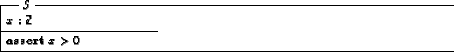
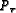

The mathematical toolkit which comes with ZETA contains some special definitions which are tailored for working with ZAP and are documented below.
The function
(\TRACE) can be used to print the value
of x to the session log. It just returns x. The function
(\PRINT) prints the value of x and returns y.
The semantic definition, apart of these side-effects, is as follows:
The function
(\FORCE) residuates the executing
constraint until x is bound (if x is not a variable, it immediately
returns). The function
(\DEEPFORCE) does so
until all free variables in x are bound. Semantically,
both are identity:
The generic constant
(\assumed) takes a set and
converts it into a unversal set. Semantically, it is identity:
However, the compiler treats as {x:X}, discarding any constraints involved by the instance of X.
This allows a usage as follows:
The constraint x>0 is not checked at execution time.
There is also a ZETA macro which supports the above usage in a more natural notation:
%%macro \assert 1 [|#1]

The function
(\EXT) enforces the enumeration
of the set x, denotating its extensional internal representation.
It is undefined for sets which cannot be enumerated. The semantic
definition is identity:
The function setreduce implements homomorphisms over sets:
Semantically, it is thus only defined for functions f which are commutative in the first argument ( f(x,f(x',y)) = f(x',f(x,y)). However, this condition is not checked in the actual implementation.
Folding on sequences, as well-known from functional programming, is provided:
The function
(\efinset) constructs the
extensional powerset of the set X, which must be enumerable.
Semantically, it is the same as :
We do not define  itself to deliver an extension since for
even small domains powersets easily explode -
contains 65536 elements.
itself to deliver an extension since for
even small domains powersets easily explode -
contains 65536 elements.
A simple concept of reflection is provided, which is currently only used for type-safe conversion of data given in a denotation or a file into a runtime value (next section).
The function results a value representing information of the base type of the set T. The function results information about a free type definition associated with the base type of T, which must be a simple type name. These functions can only be used if T does not contains generic types.
For the purpose of e.g. test evaluation, ZAP provides a type-safe conversion of data found in a file or in a denotation into values. This is achieved by the following functions:
These functions parse the denotation or the contents of the file according to the following grammar, parameterized over types, with  the start symbol, reading a sequence of values, and the non-terminal reading a single value:
Tokens are numbers, constructor names, and braces. Arbitrary white space is allowed between tokens. Here is an example: